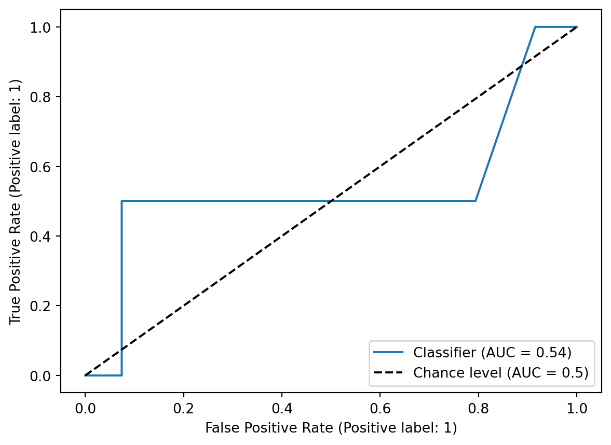
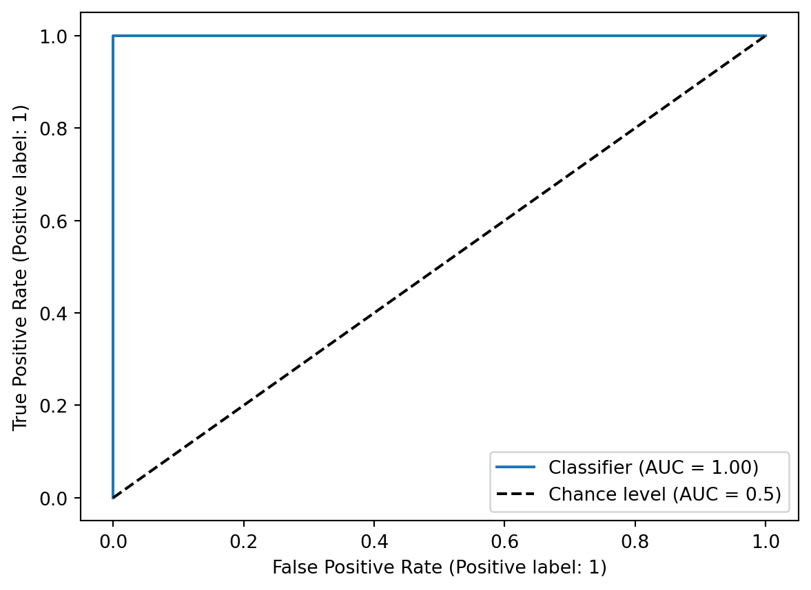
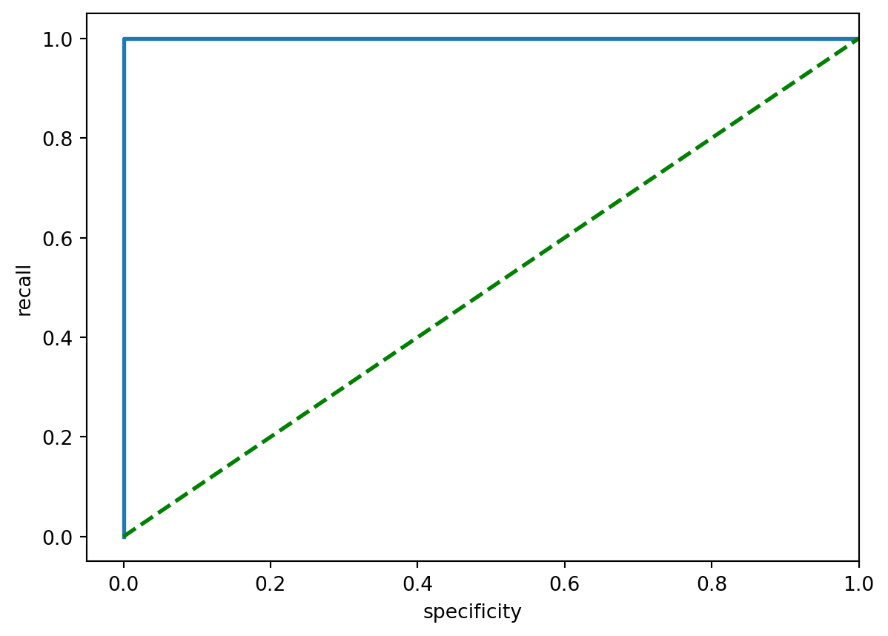

import pandas as pd
import numpy as np
import chembl_downloader
from chembl_downloader import latest, queries, query
import datamol as dm
from rdkit.Chem import Descriptors
from sklearn.ensemble import RandomForestClassifier
from sklearn import metrics
from sklearn.model_selection import train_test_split
from scikit_mol.utilities import CheckSmilesSanitazion
import ghostmlRandom forest classifier
Series 2.2.1 - more on imbalanced dataset
Machine learning projects
Tree models
Pandas
Scikit-learn
ChEMBL database
Python
Brief introduction
This post was really just an addition towards the last random forest (RF) post (machine learning (ML) series 2.2). It was mainly inspired by this paper (cite Esposito et al. on ghostml) from rinikerlab. It was also nice to complete the RF series by adding a RF classifier model since last post was only on a regressor. Knowing that imbalanced datasets were common in drug discovery projects, learning new strategies to deal with them was also extremely useful, and while I was working on this post, I also came across a few other packages that I haven’t used before, so I’ve included them all down below.
Mention outcome here? - change in Cohen’s kappa & AUC or improvement in confusion matrix after using ghostml, along with change in ROC curve
Overview on packages/scripts used
- Data source using chembl_downloader
- Own little script of random_forest.py (avoid repeating code)
- SMILES checker from scikit_mol
- Dealing with imbalanced datasets in RF classifiers by using ghostml
Importing libraries
Data retrieval using chembl_downloader
chembl_downloader package was something I wanted to try a while back after knowing that it would thoroughly document the ChEMBL data source (I’ve tried manual download and chembl_webresource_client, and they were probably not the best strategies for data reproducibility). Its idea was to generate a data source that could be fully reproducible. It involved some SQL at the beginning to specify the exact type of data needed, so some SQL knowledge was required. The rest were pretty straightforward. Other uses for this package were elaborated much more nicely in its GitHub repository at https://github.com/cthoyt/chembl-downloader. Overall, I think it was very useful in a Jupyter notebook or equivalent environments to document the data used.
Reference notebooks that used chembl_downloader (more provided in its repository): - https://github.com/cthoyt/chembl-downloader/blob/main/notebooks/drug-indications.ipynb - https://github.com/PatWalters/practical_cheminformatics_tutorials/blob/1f7c61f83eec81081ef2605ac70440bf1940d914/misc/working_with_ChEMBL_drug_data.ipynb#L80
What I did was shown below.
# Show the latest version of ChEMBL used
latest_version = latest()
print(f"The latest ChEMBL version is: {latest_version}")The latest ChEMBL version is: 33# Query chembl_downloader to show SQL required to extract ChEMBL data for a specific protein target
# e.g. target_chembl_id for AChE: CHEMBL220
queries.markdown(queries.get_target_sql(target_id="CHEMBL220", target_type="SINGLE PROTEIN"))SELECT
ASSAYS.chembl_id AS assay_chembl_id,
TARGET_DICTIONARY.target_type,
TARGET_DICTIONARY.tax_id,
COMPOUND_STRUCTURES.canonical_smiles,
MOLECULE_DICTIONARY.chembl_id AS molecule_chembl_id,
ACTIVITIES.standard_type,
ACTIVITIES.pchembl_value
FROM TARGET_DICTIONARY
JOIN ASSAYS ON TARGET_DICTIONARY.tid == ASSAYS.tid
JOIN ACTIVITIES ON ASSAYS.assay_id == ACTIVITIES.assay_id
JOIN MOLECULE_DICTIONARY ON MOLECULE_DICTIONARY.molregno == ACTIVITIES.molregno
JOIN COMPOUND_STRUCTURES ON MOLECULE_DICTIONARY.molregno == COMPOUND_STRUCTURES.molregno
WHERE TARGET_DICTIONARY.chembl_id = 'CHEMBL220'
AND ACTIVITIES.pchembl_value IS NOT NULL
AND TARGET_DICTIONARY.target_type = 'SINGLE PROTEIN'
```{python}
# Following data download worked (4.41GB for SQL query below, might take several min)
# Added MOLECULE_DICTIONARY.max_phase into sql to show max phases for compounds targeting AChE
sql = """
SELECT
ASSAYS.chembl_id AS assay_chembl_id,
TARGET_DICTIONARY.target_type,
TARGET_DICTIONARY.tax_id,
TARGET_DICTIONARY.chembl_id,
COMPOUND_STRUCTURES.canonical_smiles,
MOLECULE_DICTIONARY.chembl_id AS molecule_chembl_id,
MOLECULE_DICTIONARY.max_phase,
ACTIVITIES.standard_type,
ACTIVITIES.pchembl_value
FROM TARGET_DICTIONARY
JOIN ASSAYS ON TARGET_DICTIONARY.tid == ASSAYS.tid
JOIN ACTIVITIES ON ASSAYS.assay_id == ACTIVITIES.assay_id
JOIN MOLECULE_DICTIONARY ON MOLECULE_DICTIONARY.molregno == ACTIVITIES.molregno
JOIN COMPOUND_STRUCTURES ON MOLECULE_DICTIONARY.molregno == COMPOUND_STRUCTURES.molregno
WHERE TARGET_DICTIONARY.chembl_id = 'CHEMBL220'
AND ACTIVITIES.pchembl_value IS NOT NULL
AND TARGET_DICTIONARY.target_type = 'SINGLE PROTEIN'
"""
df = chembl_downloader.query(sql)
``````{python}
df.head()
```# Save df as .csv file
#df.to_csv("chembl_d_ache", sep=",", index=False)# Load dataset from saved .csv file
df_ache = pd.read_csv("chembl_d_ache")
print(df_ache.shape)
df_ache.head()(7144, 9)| assay_chembl_id | target_type | tax_id | chembl_id | canonical_smiles | molecule_chembl_id | max_phase | standard_type | pchembl_value | |
|---|---|---|---|---|---|---|---|---|---|
| 0 | CHEMBL1909212 | SINGLE PROTEIN | 9606 | CHEMBL220 | CC/C(=C(/CC)c1ccc(O)cc1)c1ccc(O)cc1 | CHEMBL411 | 4.0 | IC50 | 4.59 |
| 1 | CHEMBL1003053 | SINGLE PROTEIN | 9606 | CHEMBL220 | COc1c2occc2cc2ccc(=O)oc12 | CHEMBL416 | 4.0 | IC50 | 4.27 |
| 2 | CHEMBL2406149 | SINGLE PROTEIN | 9606 | CHEMBL220 | COc1c2occc2cc2ccc(=O)oc12 | CHEMBL416 | 4.0 | IC50 | 6.12 |
| 3 | CHEMBL1909212 | SINGLE PROTEIN | 9606 | CHEMBL220 | CC1(COc2ccc(CC3SC(=O)NC3=O)cc2)CCCCC1 | CHEMBL7002 | -1.0 | IC50 | 4.82 |
| 4 | CHEMBL3071788 | SINGLE PROTEIN | 9606 | CHEMBL220 | O=c1cc(-c2ccc(O)cc2)oc2cc(O)cc(O)c12 | CHEMBL28 | NaN | IC50 | 7.92 |
Some data cleaning
Minor cleaning and preprocessing were done for this post only, as the focus was more on dealing with imbalanced datasets in RF classifier.
mol_prep.py
I’ve written or more like compiled my own little pieces of code into a Python script. The idea was to remove most function code in the post to avoid repeating them as they’ve been used frequently in the last few posts. The script would be saved into my project repository, and it would still be a “work-in-progress” script as I work further in the future.
## Trial own mol_prep.py script
from mol_prep import preprocess, rdkit_2d_descriptors## Preprocess/standardise molecules
# Running preprocess function
df_ache = df_ache.copy()
df_prep = df_ache.apply(preprocess, axis = 1)
df_prep.head()| assay_chembl_id | target_type | tax_id | chembl_id | canonical_smiles | molecule_chembl_id | max_phase | standard_type | pchembl_value | rdkit_mol | standard_smiles | selfies | inchi | inchikey | |
|---|---|---|---|---|---|---|---|---|---|---|---|---|---|---|
| 0 | CHEMBL1909212 | SINGLE PROTEIN | 9606 | CHEMBL220 | CC/C(=C(/CC)c1ccc(O)cc1)c1ccc(O)cc1 | CHEMBL411 | 4.0 | IC50 | 4.59 | <rdkit.Chem.rdchem.Mol object at 0x1360c2420> | CC/C(=C(/CC)c1ccc(O)cc1)c1ccc(O)cc1 | [C][C][/C][=Branch1][P][=C][Branch1][Ring1][/C... | InChI=1S/C18H20O2/c1-3-17(13-5-9-15(19)10-6-13... | RGLYKWWBQGJZGM-ISLYRVAYSA-N |
| 1 | CHEMBL1003053 | SINGLE PROTEIN | 9606 | CHEMBL220 | COc1c2occc2cc2ccc(=O)oc12 | CHEMBL416 | 4.0 | IC50 | 4.27 | <rdkit.Chem.rdchem.Mol object at 0x1360c2490> | COc1c2occc2cc2ccc(=O)oc12 | [C][O][C][=C][O][C][=C][C][Ring1][Branch1][=C]... | InChI=1S/C12H8O4/c1-14-12-10-8(4-5-15-10)6-7-2... | QXKHYNVANLEOEG-UHFFFAOYSA-N |
| 2 | CHEMBL2406149 | SINGLE PROTEIN | 9606 | CHEMBL220 | COc1c2occc2cc2ccc(=O)oc12 | CHEMBL416 | 4.0 | IC50 | 6.12 | <rdkit.Chem.rdchem.Mol object at 0x1360c2500> | COc1c2occc2cc2ccc(=O)oc12 | [C][O][C][=C][O][C][=C][C][Ring1][Branch1][=C]... | InChI=1S/C12H8O4/c1-14-12-10-8(4-5-15-10)6-7-2... | QXKHYNVANLEOEG-UHFFFAOYSA-N |
| 3 | CHEMBL1909212 | SINGLE PROTEIN | 9606 | CHEMBL220 | CC1(COc2ccc(CC3SC(=O)NC3=O)cc2)CCCCC1 | CHEMBL7002 | -1.0 | IC50 | 4.82 | <rdkit.Chem.rdchem.Mol object at 0x1360c2570> | CC1(COc2ccc(CC3SC(=O)NC3=O)cc2)CCCCC1 | [C][C][Branch2][Ring1][=Branch2][C][O][C][=C][... | InChI=1S/C18H23NO3S/c1-18(9-3-2-4-10-18)12-22-... | YZFWTZACSRHJQD-UHFFFAOYSA-N |
| 4 | CHEMBL3071788 | SINGLE PROTEIN | 9606 | CHEMBL220 | O=c1cc(-c2ccc(O)cc2)oc2cc(O)cc(O)c12 | CHEMBL28 | NaN | IC50 | 7.92 | <rdkit.Chem.rdchem.Mol object at 0x1360c25e0> | O=c1cc(-c2ccc(O)cc2)oc2cc(O)cc(O)c12 | [O][=C][C][=C][Branch1][N][C][=C][C][=C][Branc... | InChI=1S/C15H10O5/c16-9-3-1-8(2-4-9)13-7-12(19... | KZNIFHPLKGYRTM-UHFFFAOYSA-N |
scikit_mol
Scikit_mol was a package originated from 2022 RDKit UGM hackathon. This blog post elaborated further on its functions and uses in machine learning. For this post I’ve only used it for a very small portion, mainly to check for missing SMILES or errors in SMILES (kind of like double checking whether my preprocess function code worked as expected). It could be integrated with scikit-learn’s pipeline method on multiple estimators. GitHub Repository link: https://github.com/EBjerrum/scikit-mol
# Quick simple way to check for missing SMILES
print(f'Dataset contains {df_prep.standard_smiles.isna().sum()} unparsable mols')Dataset contains 0 unparsable molsIt appeared to have no unparsable (missing) molecules.
# Checking for invalid SMILES using scikit_mol
smileschecker = CheckSmilesSanitazion()
smileschecker.sanitize(list(df_prep.standard_smiles))
# Showing SMILES errors
smileschecker.errors| SMILES |
|---|
It also confirmed that there were no errors in SMILES (as a second confirmation that the preprocessed molecules had no other unusual errors after using Datamol).
## Generate RDKit2D descriptors/fingerprints
# Running rdkit_2d_descriptors function
df_2d = rdkit_2d_descriptors(df_prep)
df_2d| MaxAbsEStateIndex | MaxEStateIndex | MinAbsEStateIndex | MinEStateIndex | qed | SPS | MolWt | HeavyAtomMolWt | ExactMolWt | NumValenceElectrons | ... | fr_sulfide | fr_sulfonamd | fr_sulfone | fr_term_acetylene | fr_tetrazole | fr_thiazole | fr_thiocyan | fr_thiophene | fr_unbrch_alkane | fr_urea | |
|---|---|---|---|---|---|---|---|---|---|---|---|---|---|---|---|---|---|---|---|---|---|
| 0 | 9.410680 | 9.410680 | 0.284153 | 0.284153 | 0.779698 | 12.100000 | 268.356000 | 248.196000 | 268.146330 | 104 | ... | 0 | 0 | 0 | 0 | 0 | 0 | 0 | 0 | 0 | 0 |
| 1 | 11.173100 | 11.173100 | 0.405828 | -0.405828 | 0.586359 | 11.062500 | 216.192000 | 208.128000 | 216.042259 | 80 | ... | 0 | 0 | 0 | 0 | 0 | 0 | 0 | 0 | 0 | 0 |
| 2 | 11.173100 | 11.173100 | 0.405828 | -0.405828 | 0.586359 | 11.062500 | 216.192000 | 208.128000 | 216.042259 | 80 | ... | 0 | 0 | 0 | 0 | 0 | 0 | 0 | 0 | 0 | 0 |
| 3 | 11.591481 | 11.591481 | 0.189306 | -0.309798 | 0.886859 | 23.608696 | 333.453000 | 310.269000 | 333.139865 | 124 | ... | 1 | 0 | 0 | 0 | 0 | 0 | 0 | 0 | 0 | 0 |
| 4 | 12.020910 | 12.020910 | 0.018823 | -0.410347 | 0.631833 | 10.800000 | 270.240000 | 260.160000 | 270.052823 | 100 | ... | 0 | 0 | 0 | 0 | 0 | 0 | 0 | 0 | 0 | 0 |
| ... | ... | ... | ... | ... | ... | ... | ... | ... | ... | ... | ... | ... | ... | ... | ... | ... | ... | ... | ... | ... | ... |
| 7139 | 11.547942 | 11.547942 | 0.062169 | -0.810432 | 0.750636 | 12.818182 | 310.394000 | 284.186000 | 310.189257 | 124 | ... | 0 | 0 | 0 | 0 | 0 | 0 | 0 | 0 | 0 | 0 |
| 7140 | 12.354746 | 12.354746 | 0.126418 | -0.615512 | 0.522384 | 15.222222 | 377.485000 | 346.237000 | 377.231456 | 150 | ... | 0 | 0 | 0 | 0 | 0 | 0 | 0 | 0 | 1 | 0 |
| 7141 | 11.771511 | 11.771511 | 0.150711 | 0.150711 | 0.493601 | 16.769231 | 393.574000 | 366.358000 | 393.143236 | 142 | ... | 1 | 0 | 0 | 0 | 0 | 0 | 0 | 0 | 4 | 0 |
| 7142 | 12.850331 | 12.850331 | 0.023599 | -0.023599 | 0.515406 | 14.366667 | 398.466000 | 376.290000 | 398.174276 | 150 | ... | 0 | 0 | 0 | 0 | 0 | 0 | 0 | 0 | 0 | 0 |
| 7143 | 11.721089 | 11.721089 | 0.389678 | -0.478126 | 0.620639 | 10.285714 | 288.311434 | 271.175434 | 288.129717 | 110 | ... | 0 | 0 | 0 | 0 | 0 | 0 | 0 | 0 | 0 | 0 |
7144 rows × 210 columns
# Merge dataframes df_prep & df_2d via index
df_merge = pd.merge(
df_prep[["max_phase", "molecule_chembl_id"]],
df_2d,
left_index=True,
right_index=True
)print(df_merge.shape)
df_merge.head()(7144, 212)| max_phase | molecule_chembl_id | MaxAbsEStateIndex | MaxEStateIndex | MinAbsEStateIndex | MinEStateIndex | qed | SPS | MolWt | HeavyAtomMolWt | ... | fr_sulfide | fr_sulfonamd | fr_sulfone | fr_term_acetylene | fr_tetrazole | fr_thiazole | fr_thiocyan | fr_thiophene | fr_unbrch_alkane | fr_urea | |
|---|---|---|---|---|---|---|---|---|---|---|---|---|---|---|---|---|---|---|---|---|---|
| 0 | 4.0 | CHEMBL411 | 9.410680 | 9.410680 | 0.284153 | 0.284153 | 0.779698 | 12.100000 | 268.356 | 248.196 | ... | 0 | 0 | 0 | 0 | 0 | 0 | 0 | 0 | 0 | 0 |
| 1 | 4.0 | CHEMBL416 | 11.173100 | 11.173100 | 0.405828 | -0.405828 | 0.586359 | 11.062500 | 216.192 | 208.128 | ... | 0 | 0 | 0 | 0 | 0 | 0 | 0 | 0 | 0 | 0 |
| 2 | 4.0 | CHEMBL416 | 11.173100 | 11.173100 | 0.405828 | -0.405828 | 0.586359 | 11.062500 | 216.192 | 208.128 | ... | 0 | 0 | 0 | 0 | 0 | 0 | 0 | 0 | 0 | 0 |
| 3 | -1.0 | CHEMBL7002 | 11.591481 | 11.591481 | 0.189306 | -0.309798 | 0.886859 | 23.608696 | 333.453 | 310.269 | ... | 1 | 0 | 0 | 0 | 0 | 0 | 0 | 0 | 0 | 0 |
| 4 | NaN | CHEMBL28 | 12.020910 | 12.020910 | 0.018823 | -0.410347 | 0.631833 | 10.800000 | 270.240 | 260.160 | ... | 0 | 0 | 0 | 0 | 0 | 0 | 0 | 0 | 0 | 0 |
5 rows × 212 columns
Different spreads of max phases were shown as the SQL query mainly used IC50 (whereas last post was strictly limited to Ki via ChEMBL web resource client). Other reason was that in the decision tree series, I attempted data preprocessing at a larger scale (which eliminated some data). So, it appeared that there were more max phase 4 compounds here than last time (Note: null compounds were not shown in the value counts here as it was labelled as “NaN”, but it should be the largest portion of max phase in the data).
# Find out counts of each max phase
df_merge.value_counts("max_phase")max_phase
4.0 618
-1.0 69
2.0 29
3.0 10
1.0 7
0.5 1
Name: count, dtype: int64I then tried searching for the chembl_id of the 10 max phase 4 compounds used in the last post in df_merge.
# Previously used 10 max phase 4 compounds
# donepezil = CHEMBL502
# galantamine = CHEMBL659
list_mp4 = ["CHEMBL95", "CHEMBL1128", "CHEMBL640", "CHEMBL502", "CHEMBL481", "CHEMBL360055", "CHEMBL1025", "CHEMBL659", "CHEMBL1200970", "CHEMBL1677"]
# Search for compounds in list_mp4 within df_merge's "molecule_chembl_id" column
# using Series.isin
df_prev = df_merge.loc[df_merge["molecule_chembl_id"].isin(list_mp4)]
df_prev| max_phase | molecule_chembl_id | MaxAbsEStateIndex | MaxEStateIndex | MinAbsEStateIndex | MinEStateIndex | qed | SPS | MolWt | HeavyAtomMolWt | ... | fr_sulfide | fr_sulfonamd | fr_sulfone | fr_term_acetylene | fr_tetrazole | fr_thiazole | fr_thiocyan | fr_thiophene | fr_unbrch_alkane | fr_urea | |
|---|---|---|---|---|---|---|---|---|---|---|---|---|---|---|---|---|---|---|---|---|---|
| 9 | 4.0 | CHEMBL481 | 13.581173 | 13.581173 | 0.095133 | -1.863974 | 0.355956 | 22.209302 | 586.689 | 548.385 | ... | 0 | 0 | 0 | 0 | 0 | 0 | 0 | 0 | 0 | 0 |
| 10 | 4.0 | CHEMBL481 | 13.581173 | 13.581173 | 0.095133 | -1.863974 | 0.355956 | 22.209302 | 586.689 | 548.385 | ... | 0 | 0 | 0 | 0 | 0 | 0 | 0 | 0 | 0 | 0 |
| 67 | 4.0 | CHEMBL95 | 6.199769 | 6.199769 | 0.953981 | 0.953981 | 0.706488 | 15.200000 | 198.269 | 184.157 | ... | 0 | 0 | 0 | 0 | 0 | 0 | 0 | 0 | 0 | 0 |
| 68 | 4.0 | CHEMBL95 | 6.199769 | 6.199769 | 0.953981 | 0.953981 | 0.706488 | 15.200000 | 198.269 | 184.157 | ... | 0 | 0 | 0 | 0 | 0 | 0 | 0 | 0 | 0 | 0 |
| 69 | 4.0 | CHEMBL95 | 6.199769 | 6.199769 | 0.953981 | 0.953981 | 0.706488 | 15.200000 | 198.269 | 184.157 | ... | 0 | 0 | 0 | 0 | 0 | 0 | 0 | 0 | 0 | 0 |
| ... | ... | ... | ... | ... | ... | ... | ... | ... | ... | ... | ... | ... | ... | ... | ... | ... | ... | ... | ... | ... | ... |
| 3272 | 4.0 | CHEMBL1200970 | 2.520809 | 2.520809 | 0.000000 | 0.000000 | 0.709785 | 14.000000 | 348.943 | 323.743 | ... | 0 | 0 | 0 | 0 | 0 | 0 | 0 | 0 | 0 | 0 |
| 3273 | 4.0 | CHEMBL1200970 | 2.520809 | 2.520809 | 0.000000 | 0.000000 | 0.709785 | 14.000000 | 348.943 | 323.743 | ... | 0 | 0 | 0 | 0 | 0 | 0 | 0 | 0 | 0 | 0 |
| 3274 | 4.0 | CHEMBL1200970 | 2.520809 | 2.520809 | 0.000000 | 0.000000 | 0.709785 | 14.000000 | 348.943 | 323.743 | ... | 0 | 0 | 0 | 0 | 0 | 0 | 0 | 0 | 0 | 0 |
| 3275 | 4.0 | CHEMBL1200970 | 2.520809 | 2.520809 | 0.000000 | 0.000000 | 0.709785 | 14.000000 | 348.943 | 323.743 | ... | 0 | 0 | 0 | 0 | 0 | 0 | 0 | 0 | 0 | 0 |
| 3276 | 4.0 | CHEMBL1200970 | 2.520809 | 2.520809 | 0.000000 | 0.000000 | 0.709785 | 14.000000 | 348.943 | 323.743 | ... | 0 | 0 | 0 | 0 | 0 | 0 | 0 | 0 | 0 | 0 |
439 rows × 212 columns
There were many duplicates of compounds.
# Some compounds with duplicates
print(df_prev.shape)
df_prev.value_counts("molecule_chembl_id")(439, 212)molecule_chembl_id
CHEMBL95 182
CHEMBL502 143
CHEMBL659 76
CHEMBL1128 12
CHEMBL1677 10
CHEMBL1200970 6
CHEMBL640 4
CHEMBL1025 3
CHEMBL481 2
CHEMBL360055 1
Name: count, dtype: int64# Dropping duplicated compound via chembl IDs in the main df
df_merge_new = df_merge.drop_duplicates(subset=["molecule_chembl_id"], keep="first")
print(df_merge_new.shape)
df_merge_new.head()(5357, 212)| max_phase | molecule_chembl_id | MaxAbsEStateIndex | MaxEStateIndex | MinAbsEStateIndex | MinEStateIndex | qed | SPS | MolWt | HeavyAtomMolWt | ... | fr_sulfide | fr_sulfonamd | fr_sulfone | fr_term_acetylene | fr_tetrazole | fr_thiazole | fr_thiocyan | fr_thiophene | fr_unbrch_alkane | fr_urea | |
|---|---|---|---|---|---|---|---|---|---|---|---|---|---|---|---|---|---|---|---|---|---|
| 0 | 4.0 | CHEMBL411 | 9.410680 | 9.410680 | 0.284153 | 0.284153 | 0.779698 | 12.100000 | 268.356 | 248.196 | ... | 0 | 0 | 0 | 0 | 0 | 0 | 0 | 0 | 0 | 0 |
| 1 | 4.0 | CHEMBL416 | 11.173100 | 11.173100 | 0.405828 | -0.405828 | 0.586359 | 11.062500 | 216.192 | 208.128 | ... | 0 | 0 | 0 | 0 | 0 | 0 | 0 | 0 | 0 | 0 |
| 3 | -1.0 | CHEMBL7002 | 11.591481 | 11.591481 | 0.189306 | -0.309798 | 0.886859 | 23.608696 | 333.453 | 310.269 | ... | 1 | 0 | 0 | 0 | 0 | 0 | 0 | 0 | 0 | 0 |
| 4 | NaN | CHEMBL28 | 12.020910 | 12.020910 | 0.018823 | -0.410347 | 0.631833 | 10.800000 | 270.240 | 260.160 | ... | 0 | 0 | 0 | 0 | 0 | 0 | 0 | 0 | 0 | 0 |
| 5 | 4.0 | CHEMBL41 | 12.564531 | 12.564531 | 0.203346 | -4.329869 | 0.851796 | 12.909091 | 309.331 | 291.187 | ... | 0 | 0 | 0 | 0 | 0 | 0 | 0 | 0 | 0 | 0 |
5 rows × 212 columns
# Previously used 10 max phase 4 compounds were found in df_merge_new
df_mp4 = df_merge_new.loc[df_merge_new["molecule_chembl_id"].isin(list_mp4)]
df_mp4| max_phase | molecule_chembl_id | MaxAbsEStateIndex | MaxEStateIndex | MinAbsEStateIndex | MinEStateIndex | qed | SPS | MolWt | HeavyAtomMolWt | ... | fr_sulfide | fr_sulfonamd | fr_sulfone | fr_term_acetylene | fr_tetrazole | fr_thiazole | fr_thiocyan | fr_thiophene | fr_unbrch_alkane | fr_urea | |
|---|---|---|---|---|---|---|---|---|---|---|---|---|---|---|---|---|---|---|---|---|---|
| 9 | 4.0 | CHEMBL481 | 13.581173 | 13.581173 | 0.095133 | -1.863974 | 0.355956 | 22.209302 | 586.689 | 548.385 | ... | 0 | 0 | 0 | 0 | 0 | 0 | 0 | 0 | 0 | 0 |
| 67 | 4.0 | CHEMBL95 | 6.199769 | 6.199769 | 0.953981 | 0.953981 | 0.706488 | 15.200000 | 198.269 | 184.157 | ... | 0 | 0 | 0 | 0 | 0 | 0 | 0 | 0 | 0 | 0 |
| 249 | 4.0 | CHEMBL502 | 12.936933 | 12.936933 | 0.108783 | 0.108783 | 0.747461 | 20.214286 | 379.500 | 350.268 | ... | 0 | 0 | 0 | 0 | 0 | 0 | 0 | 0 | 0 | 0 |
| 508 | 4.0 | CHEMBL640 | 11.743677 | 11.743677 | 0.044300 | -0.044300 | 0.731540 | 10.529412 | 235.331 | 214.163 | ... | 0 | 0 | 0 | 0 | 0 | 0 | 0 | 0 | 0 | 0 |
| 512 | 4.0 | CHEMBL659 | 9.972866 | 9.972866 | 0.008380 | -0.411699 | 0.800524 | 33.857143 | 287.359 | 266.191 | ... | 0 | 0 | 0 | 0 | 0 | 0 | 0 | 0 | 0 | 0 |
| 1013 | 4.0 | CHEMBL1025 | 12.703056 | 12.703056 | 0.426312 | -4.304784 | 0.629869 | 13.000000 | 184.147 | 170.035 | ... | 0 | 0 | 0 | 0 | 0 | 0 | 0 | 0 | 0 | 0 |
| 1345 | 4.0 | CHEMBL1128 | 9.261910 | 9.261910 | 0.000000 | 0.000000 | 0.608112 | 10.692308 | 201.697 | 185.569 | ... | 0 | 0 | 0 | 0 | 0 | 0 | 0 | 0 | 0 | 0 |
| 2028 | 4.0 | CHEMBL360055 | 6.476818 | 6.476818 | 0.656759 | 0.656759 | 0.205822 | 12.583333 | 510.828 | 450.348 | ... | 0 | 0 | 0 | 0 | 0 | 0 | 0 | 0 | 0 | 0 |
| 2725 | 4.0 | CHEMBL1677 | 6.199769 | 6.199769 | 0.000000 | 0.000000 | 0.760853 | 14.250000 | 234.730 | 219.610 | ... | 0 | 0 | 0 | 0 | 0 | 0 | 0 | 0 | 0 | 0 |
| 3271 | 4.0 | CHEMBL1200970 | 2.520809 | 2.520809 | 0.000000 | 0.000000 | 0.709785 | 14.000000 | 348.943 | 323.743 | ... | 0 | 0 | 0 | 0 | 0 | 0 | 0 | 0 | 0 | 0 |
10 rows × 212 columns
# note: compounds with max phase 0 not shown in the count
df_merge_new.value_counts("max_phase")max_phase
4.0 55
-1.0 26
2.0 8
3.0 7
1.0 4
0.5 1
Name: count, dtype: int64Model building
The aim was to model and classify the max phase of ChEMBL small molecules - max phase 4 or not: - target: max_phase - features: various RDKit 2D descriptors (RDKit2D)
- Re-labelled max phases as binary labels (e.g. max phase null as 0, max phase 4 as 1)
# Re-label max phase NaN as 0
df_merge_new = df_merge_new.fillna(0)
df_merge_new| max_phase | molecule_chembl_id | MaxAbsEStateIndex | MaxEStateIndex | MinAbsEStateIndex | MinEStateIndex | qed | SPS | MolWt | HeavyAtomMolWt | ... | fr_sulfide | fr_sulfonamd | fr_sulfone | fr_term_acetylene | fr_tetrazole | fr_thiazole | fr_thiocyan | fr_thiophene | fr_unbrch_alkane | fr_urea | |
|---|---|---|---|---|---|---|---|---|---|---|---|---|---|---|---|---|---|---|---|---|---|
| 0 | 4.0 | CHEMBL411 | 9.410680 | 9.410680 | 0.284153 | 0.284153 | 0.779698 | 12.100000 | 268.356000 | 248.196000 | ... | 0 | 0 | 0 | 0 | 0 | 0 | 0 | 0 | 0 | 0 |
| 1 | 4.0 | CHEMBL416 | 11.173100 | 11.173100 | 0.405828 | -0.405828 | 0.586359 | 11.062500 | 216.192000 | 208.128000 | ... | 0 | 0 | 0 | 0 | 0 | 0 | 0 | 0 | 0 | 0 |
| 3 | -1.0 | CHEMBL7002 | 11.591481 | 11.591481 | 0.189306 | -0.309798 | 0.886859 | 23.608696 | 333.453000 | 310.269000 | ... | 1 | 0 | 0 | 0 | 0 | 0 | 0 | 0 | 0 | 0 |
| 4 | 0.0 | CHEMBL28 | 12.020910 | 12.020910 | 0.018823 | -0.410347 | 0.631833 | 10.800000 | 270.240000 | 260.160000 | ... | 0 | 0 | 0 | 0 | 0 | 0 | 0 | 0 | 0 | 0 |
| 5 | 4.0 | CHEMBL41 | 12.564531 | 12.564531 | 0.203346 | -4.329869 | 0.851796 | 12.909091 | 309.331000 | 291.187000 | ... | 0 | 0 | 0 | 0 | 0 | 0 | 0 | 0 | 0 | 0 |
| ... | ... | ... | ... | ... | ... | ... | ... | ... | ... | ... | ... | ... | ... | ... | ... | ... | ... | ... | ... | ... | ... |
| 7139 | 0.0 | CHEMBL5220560 | 11.547942 | 11.547942 | 0.062169 | -0.810432 | 0.750636 | 12.818182 | 310.394000 | 284.186000 | ... | 0 | 0 | 0 | 0 | 0 | 0 | 0 | 0 | 0 | 0 |
| 7140 | 0.0 | CHEMBL5220695 | 12.354746 | 12.354746 | 0.126418 | -0.615512 | 0.522384 | 15.222222 | 377.485000 | 346.237000 | ... | 0 | 0 | 0 | 0 | 0 | 0 | 0 | 0 | 1 | 0 |
| 7141 | 0.0 | CHEMBL5220742 | 11.771511 | 11.771511 | 0.150711 | 0.150711 | 0.493601 | 16.769231 | 393.574000 | 366.358000 | ... | 1 | 0 | 0 | 0 | 0 | 0 | 0 | 0 | 4 | 0 |
| 7142 | 0.0 | CHEMBL5220884 | 12.850331 | 12.850331 | 0.023599 | -0.023599 | 0.515406 | 14.366667 | 398.466000 | 376.290000 | ... | 0 | 0 | 0 | 0 | 0 | 0 | 0 | 0 | 0 | 0 |
| 7143 | 0.0 | CHEMBL5220983 | 11.721089 | 11.721089 | 0.389678 | -0.478126 | 0.620639 | 10.285714 | 288.311434 | 271.175434 | ... | 0 | 0 | 0 | 0 | 0 | 0 | 0 | 0 | 0 | 0 |
5357 rows × 212 columns
- Splitting data into max phase null & max phase 4 (reason being needing to re-label max phase 4 column only as 1, and not disrupting max phase 0 compounds)
# Select all max phase null compounds
df_null = df_merge_new[df_merge_new["max_phase"] == 0]
print(df_null.shape)
df_null.head()(5256, 212)| max_phase | molecule_chembl_id | MaxAbsEStateIndex | MaxEStateIndex | MinAbsEStateIndex | MinEStateIndex | qed | SPS | MolWt | HeavyAtomMolWt | ... | fr_sulfide | fr_sulfonamd | fr_sulfone | fr_term_acetylene | fr_tetrazole | fr_thiazole | fr_thiocyan | fr_thiophene | fr_unbrch_alkane | fr_urea | |
|---|---|---|---|---|---|---|---|---|---|---|---|---|---|---|---|---|---|---|---|---|---|
| 4 | 0.0 | CHEMBL28 | 12.020910 | 12.020910 | 0.018823 | -0.410347 | 0.631833 | 10.800000 | 270.240 | 260.160 | ... | 0 | 0 | 0 | 0 | 0 | 0 | 0 | 0 | 0 | 0 |
| 8 | 0.0 | CHEMBL8320 | 10.282778 | 10.282778 | 0.120741 | -0.120741 | 0.416681 | 17.500000 | 108.096 | 104.064 | ... | 0 | 0 | 0 | 0 | 0 | 0 | 0 | 0 | 0 | 0 |
| 14 | 0.0 | CHEMBL11833 | 11.201531 | 11.201531 | 0.428520 | -0.466092 | 0.838024 | 25.157895 | 262.309 | 244.165 | ... | 0 | 0 | 0 | 0 | 0 | 0 | 0 | 0 | 0 | 0 |
| 392 | 0.0 | CHEMBL12324 | 11.257704 | 11.257704 | 0.462395 | -0.462395 | 0.797990 | 26.150000 | 277.344 | 256.176 | ... | 0 | 0 | 0 | 0 | 0 | 0 | 0 | 0 | 0 | 0 |
| 393 | 0.0 | CHEMBL274107 | 11.359778 | 11.359778 | 0.372211 | -0.473241 | 0.838024 | 25.157895 | 262.309 | 244.165 | ... | 0 | 0 | 0 | 0 | 0 | 0 | 0 | 0 | 0 | 0 |
5 rows × 212 columns
# Using pd.DataFrame.assign to add a new column to re-label max_phase 4 into "1"
df_mp4_lb = df_mp4.assign(max_phase_lb = df_mp4["max_phase"] / 4)
# Using pd.DataFrame.pop() & insert() to shift added column to first column position
first_col = df_mp4_lb.pop("max_phase_lb")
df_mp4_lb.insert(0, "max_phase_lb", first_col)
df_mp4_lb| max_phase_lb | max_phase | molecule_chembl_id | MaxAbsEStateIndex | MaxEStateIndex | MinAbsEStateIndex | MinEStateIndex | qed | SPS | MolWt | ... | fr_sulfide | fr_sulfonamd | fr_sulfone | fr_term_acetylene | fr_tetrazole | fr_thiazole | fr_thiocyan | fr_thiophene | fr_unbrch_alkane | fr_urea | |
|---|---|---|---|---|---|---|---|---|---|---|---|---|---|---|---|---|---|---|---|---|---|
| 9 | 1.0 | 4.0 | CHEMBL481 | 13.581173 | 13.581173 | 0.095133 | -1.863974 | 0.355956 | 22.209302 | 586.689 | ... | 0 | 0 | 0 | 0 | 0 | 0 | 0 | 0 | 0 | 0 |
| 67 | 1.0 | 4.0 | CHEMBL95 | 6.199769 | 6.199769 | 0.953981 | 0.953981 | 0.706488 | 15.200000 | 198.269 | ... | 0 | 0 | 0 | 0 | 0 | 0 | 0 | 0 | 0 | 0 |
| 249 | 1.0 | 4.0 | CHEMBL502 | 12.936933 | 12.936933 | 0.108783 | 0.108783 | 0.747461 | 20.214286 | 379.500 | ... | 0 | 0 | 0 | 0 | 0 | 0 | 0 | 0 | 0 | 0 |
| 508 | 1.0 | 4.0 | CHEMBL640 | 11.743677 | 11.743677 | 0.044300 | -0.044300 | 0.731540 | 10.529412 | 235.331 | ... | 0 | 0 | 0 | 0 | 0 | 0 | 0 | 0 | 0 | 0 |
| 512 | 1.0 | 4.0 | CHEMBL659 | 9.972866 | 9.972866 | 0.008380 | -0.411699 | 0.800524 | 33.857143 | 287.359 | ... | 0 | 0 | 0 | 0 | 0 | 0 | 0 | 0 | 0 | 0 |
| 1013 | 1.0 | 4.0 | CHEMBL1025 | 12.703056 | 12.703056 | 0.426312 | -4.304784 | 0.629869 | 13.000000 | 184.147 | ... | 0 | 0 | 0 | 0 | 0 | 0 | 0 | 0 | 0 | 0 |
| 1345 | 1.0 | 4.0 | CHEMBL1128 | 9.261910 | 9.261910 | 0.000000 | 0.000000 | 0.608112 | 10.692308 | 201.697 | ... | 0 | 0 | 0 | 0 | 0 | 0 | 0 | 0 | 0 | 0 |
| 2028 | 1.0 | 4.0 | CHEMBL360055 | 6.476818 | 6.476818 | 0.656759 | 0.656759 | 0.205822 | 12.583333 | 510.828 | ... | 0 | 0 | 0 | 0 | 0 | 0 | 0 | 0 | 0 | 0 |
| 2725 | 1.0 | 4.0 | CHEMBL1677 | 6.199769 | 6.199769 | 0.000000 | 0.000000 | 0.760853 | 14.250000 | 234.730 | ... | 0 | 0 | 0 | 0 | 0 | 0 | 0 | 0 | 0 | 0 |
| 3271 | 1.0 | 4.0 | CHEMBL1200970 | 2.520809 | 2.520809 | 0.000000 | 0.000000 | 0.709785 | 14.000000 | 348.943 | ... | 0 | 0 | 0 | 0 | 0 | 0 | 0 | 0 | 0 | 0 |
10 rows × 213 columns
# Also create a new column max_phase_lb column for df_null to merge 2 dfs together
df_null_lb = df_null.assign(max_phase_lb = df_null["max_phase"])
first_col_null = df_null_lb.pop("max_phase_lb")
df_null_lb.insert(0, "max_phase_lb", first_col_null)
df_null_lb.head()| max_phase_lb | max_phase | molecule_chembl_id | MaxAbsEStateIndex | MaxEStateIndex | MinAbsEStateIndex | MinEStateIndex | qed | SPS | MolWt | ... | fr_sulfide | fr_sulfonamd | fr_sulfone | fr_term_acetylene | fr_tetrazole | fr_thiazole | fr_thiocyan | fr_thiophene | fr_unbrch_alkane | fr_urea | |
|---|---|---|---|---|---|---|---|---|---|---|---|---|---|---|---|---|---|---|---|---|---|
| 4 | 0.0 | 0.0 | CHEMBL28 | 12.020910 | 12.020910 | 0.018823 | -0.410347 | 0.631833 | 10.800000 | 270.240 | ... | 0 | 0 | 0 | 0 | 0 | 0 | 0 | 0 | 0 | 0 |
| 8 | 0.0 | 0.0 | CHEMBL8320 | 10.282778 | 10.282778 | 0.120741 | -0.120741 | 0.416681 | 17.500000 | 108.096 | ... | 0 | 0 | 0 | 0 | 0 | 0 | 0 | 0 | 0 | 0 |
| 14 | 0.0 | 0.0 | CHEMBL11833 | 11.201531 | 11.201531 | 0.428520 | -0.466092 | 0.838024 | 25.157895 | 262.309 | ... | 0 | 0 | 0 | 0 | 0 | 0 | 0 | 0 | 0 | 0 |
| 392 | 0.0 | 0.0 | CHEMBL12324 | 11.257704 | 11.257704 | 0.462395 | -0.462395 | 0.797990 | 26.150000 | 277.344 | ... | 0 | 0 | 0 | 0 | 0 | 0 | 0 | 0 | 0 | 0 |
| 393 | 0.0 | 0.0 | CHEMBL274107 | 11.359778 | 11.359778 | 0.372211 | -0.473241 | 0.838024 | 25.157895 | 262.309 | ... | 0 | 0 | 0 | 0 | 0 | 0 | 0 | 0 | 0 | 0 |
5 rows × 213 columns
The two dataframes should share same column names which could be combined together.
# Concatenate df_mp4_lb & df_null_lb
df_full = pd.concat([df_null_lb, df_mp4_lb])
df_full| max_phase_lb | max_phase | molecule_chembl_id | MaxAbsEStateIndex | MaxEStateIndex | MinAbsEStateIndex | MinEStateIndex | qed | SPS | MolWt | ... | fr_sulfide | fr_sulfonamd | fr_sulfone | fr_term_acetylene | fr_tetrazole | fr_thiazole | fr_thiocyan | fr_thiophene | fr_unbrch_alkane | fr_urea | |
|---|---|---|---|---|---|---|---|---|---|---|---|---|---|---|---|---|---|---|---|---|---|
| 4 | 0.0 | 0.0 | CHEMBL28 | 12.020910 | 12.020910 | 0.018823 | -0.410347 | 0.631833 | 10.800000 | 270.240 | ... | 0 | 0 | 0 | 0 | 0 | 0 | 0 | 0 | 0 | 0 |
| 8 | 0.0 | 0.0 | CHEMBL8320 | 10.282778 | 10.282778 | 0.120741 | -0.120741 | 0.416681 | 17.500000 | 108.096 | ... | 0 | 0 | 0 | 0 | 0 | 0 | 0 | 0 | 0 | 0 |
| 14 | 0.0 | 0.0 | CHEMBL11833 | 11.201531 | 11.201531 | 0.428520 | -0.466092 | 0.838024 | 25.157895 | 262.309 | ... | 0 | 0 | 0 | 0 | 0 | 0 | 0 | 0 | 0 | 0 |
| 392 | 0.0 | 0.0 | CHEMBL12324 | 11.257704 | 11.257704 | 0.462395 | -0.462395 | 0.797990 | 26.150000 | 277.344 | ... | 0 | 0 | 0 | 0 | 0 | 0 | 0 | 0 | 0 | 0 |
| 393 | 0.0 | 0.0 | CHEMBL274107 | 11.359778 | 11.359778 | 0.372211 | -0.473241 | 0.838024 | 25.157895 | 262.309 | ... | 0 | 0 | 0 | 0 | 0 | 0 | 0 | 0 | 0 | 0 |
| ... | ... | ... | ... | ... | ... | ... | ... | ... | ... | ... | ... | ... | ... | ... | ... | ... | ... | ... | ... | ... | ... |
| 1013 | 1.0 | 4.0 | CHEMBL1025 | 12.703056 | 12.703056 | 0.426312 | -4.304784 | 0.629869 | 13.000000 | 184.147 | ... | 0 | 0 | 0 | 0 | 0 | 0 | 0 | 0 | 0 | 0 |
| 1345 | 1.0 | 4.0 | CHEMBL1128 | 9.261910 | 9.261910 | 0.000000 | 0.000000 | 0.608112 | 10.692308 | 201.697 | ... | 0 | 0 | 0 | 0 | 0 | 0 | 0 | 0 | 0 | 0 |
| 2028 | 1.0 | 4.0 | CHEMBL360055 | 6.476818 | 6.476818 | 0.656759 | 0.656759 | 0.205822 | 12.583333 | 510.828 | ... | 0 | 0 | 0 | 0 | 0 | 0 | 0 | 0 | 0 | 0 |
| 2725 | 1.0 | 4.0 | CHEMBL1677 | 6.199769 | 6.199769 | 0.000000 | 0.000000 | 0.760853 | 14.250000 | 234.730 | ... | 0 | 0 | 0 | 0 | 0 | 0 | 0 | 0 | 0 | 0 |
| 3271 | 1.0 | 4.0 | CHEMBL1200970 | 2.520809 | 2.520809 | 0.000000 | 0.000000 | 0.709785 | 14.000000 | 348.943 | ... | 0 | 0 | 0 | 0 | 0 | 0 | 0 | 0 | 0 | 0 |
5266 rows × 213 columns
- Define X and y variables and train RF classifier model
Eventually df_full contained 10 active compounds and 5256 inactive compounds, as shown from the value counts.
df_full.value_counts("max_phase_lb")max_phase_lb
0.0 5256
1.0 10
Name: count, dtype: int64# Cast max_phase_lb column into integer
df_full["max_phase_lb"] = df_full["max_phase_lb"].astype(int)df_full.head()| max_phase_lb | max_phase | molecule_chembl_id | MaxAbsEStateIndex | MaxEStateIndex | MinAbsEStateIndex | MinEStateIndex | qed | SPS | MolWt | ... | fr_sulfide | fr_sulfonamd | fr_sulfone | fr_term_acetylene | fr_tetrazole | fr_thiazole | fr_thiocyan | fr_thiophene | fr_unbrch_alkane | fr_urea | |
|---|---|---|---|---|---|---|---|---|---|---|---|---|---|---|---|---|---|---|---|---|---|
| 4 | 0 | 0.0 | CHEMBL28 | 12.020910 | 12.020910 | 0.018823 | -0.410347 | 0.631833 | 10.800000 | 270.240 | ... | 0 | 0 | 0 | 0 | 0 | 0 | 0 | 0 | 0 | 0 |
| 8 | 0 | 0.0 | CHEMBL8320 | 10.282778 | 10.282778 | 0.120741 | -0.120741 | 0.416681 | 17.500000 | 108.096 | ... | 0 | 0 | 0 | 0 | 0 | 0 | 0 | 0 | 0 | 0 |
| 14 | 0 | 0.0 | CHEMBL11833 | 11.201531 | 11.201531 | 0.428520 | -0.466092 | 0.838024 | 25.157895 | 262.309 | ... | 0 | 0 | 0 | 0 | 0 | 0 | 0 | 0 | 0 | 0 |
| 392 | 0 | 0.0 | CHEMBL12324 | 11.257704 | 11.257704 | 0.462395 | -0.462395 | 0.797990 | 26.150000 | 277.344 | ... | 0 | 0 | 0 | 0 | 0 | 0 | 0 | 0 | 0 | 0 |
| 393 | 0 | 0.0 | CHEMBL274107 | 11.359778 | 11.359778 | 0.372211 | -0.473241 | 0.838024 | 25.157895 | 262.309 | ... | 0 | 0 | 0 | 0 | 0 | 0 | 0 | 0 | 0 | 0 |
5 rows × 213 columns
# Defining X (features) & y (target)
X = df_full.iloc[:, 3:]
y = df_full.iloc[:, 0]# Checking the right data have been selected
y4 0
8 0
14 0
392 0
393 0
..
1013 1
1345 1
2028 1
2725 1
3271 1
Name: max_phase_lb, Length: 5266, dtype: int64# Convert both X & y to arrays
X = X.to_numpy()
y = y.to_numpy()# Using train_test_split() this time to split data
X_train, X_test, y_train, y_test = train_test_split(X, y, test_size=0.2, stratify=y, random_state=1)- Training RF classifier model
Reference notebook: https://github.com/rinikerlab/GHOST/blob/main/notebooks/example_GHOST.ipynb
# Using RandomForestClassifier() to train model
# max_features = "sqrt" by default, I decided to show it explicitly in the code to make sure the right one was used
rfc = RandomForestClassifier(max_depth=3, random_state=1, max_features="sqrt", oob_score=True)
rfc.fit(X_train, y_train)RandomForestClassifier(max_depth=3, oob_score=True, random_state=1)In a Jupyter environment, please rerun this cell to show the HTML representation or trust the notebook.
On GitHub, the HTML representation is unable to render, please try loading this page with nbviewer.org.
RandomForestClassifier(max_depth=3, oob_score=True, random_state=1)
- Obtain the prediction probabilities on the testing data and show confusion matrix with classification metrics
# Extract positive prediction probabilities for the testing set
test_probs = rfc.predict_proba(X_test)[:, 1]A useful web link on area under the receiver operating characteristic curve - https://developers.google.com/machine-learning/crash-course/classification/roc-and-auc
# Rather than re-inventing the wheel, the following function code for calculating metrics of the RF model was adapted from Landrum et al., from this notebook: https://github.com/rinikerlab/GHOST/blob/main/notebooks/example_GHOST.ipynb
def calc_metrics(y_test, test_probs, threshold = 0.5):
# Scores to differentiate between stated decision threshold (default = 0.5)
scores = [1 if x>=threshold else 0 for x in test_probs]
# Calculate area under the receiver operating characteristic curve
auc = metrics.roc_auc_score(y_test, test_probs)
# Calculate Cohen's Kappa score
kappa = metrics.cohen_kappa_score(y_test, scores)
# Formulate the confusion matrix
confusion = metrics.confusion_matrix(y_test, scores, labels = list(set(y_test)))
print('thresh: %.2f, kappa: %.3f, AUC test-set: %.3f'%(threshold, kappa, auc))
print(confusion)
print(metrics.classification_report(y_test,scores))
return Initially I made a mistake when doing the data split, which created a problem with y_test which only contained one label in it (1 only), needs binary labels (0 & 1)
It was needed for roc_auc_score (measures true +ve & false +ve rates).
# Show confusion matrix along with AUC and Cohen's Kappa
calc_metrics(y_test, test_probs, threshold = 0.5)
# This was an extreme case - as only 10 actives vs. 5256 inactivesthresh: 0.50, kappa: 0.000, AUC test-set: 0.536
[[1052 0]
[ 2 0]]
precision recall f1-score support
0 1.00 1.00 1.00 1052
1 0.00 0.00 0.00 2
accuracy 1.00 1054
macro avg 0.50 0.50 0.50 1054
weighted avg 1.00 1.00 1.00 1054
/Users/jenniferlin/ML2-2_random_forest/py3.10venv/lib/python3.10/site-packages/sklearn/metrics/_classification.py:1469: UndefinedMetricWarning: Precision and F-score are ill-defined and being set to 0.0 in labels with no predicted samples. Use `zero_division` parameter to control this behavior.
_warn_prf(average, modifier, msg_start, len(result))
/Users/jenniferlin/ML2-2_random_forest/py3.10venv/lib/python3.10/site-packages/sklearn/metrics/_classification.py:1469: UndefinedMetricWarning: Precision and F-score are ill-defined and being set to 0.0 in labels with no predicted samples. Use `zero_division` parameter to control this behavior.
_warn_prf(average, modifier, msg_start, len(result))
/Users/jenniferlin/ML2-2_random_forest/py3.10venv/lib/python3.10/site-packages/sklearn/metrics/_classification.py:1469: UndefinedMetricWarning: Precision and F-score are ill-defined and being set to 0.0 in labels with no predicted samples. Use `zero_division` parameter to control this behavior.
_warn_prf(average, modifier, msg_start, len(result))two approaches from GHOST paper (main idea was optimising and shifting decision threshold):
approach 1 (out-of-bag method, aimed for RF classifiers) based on RDKit blog post (ref. 41) - http://rdkit.blogspot.com/2018/11/working-with-unbalanced-data-part-i.html (viewable notebook version via nbviewer)
approach 2 led to Generalised threshold shifting (GHOST) procedure (could be used for any classification methods) - ghostml package
I only used approach 2 here as both approaches were shown to be performing similarly in the paper, and also approach 1 was already described in a RDKit blog post.
- extract the prediction probabilities from the RF classifier trained model
# Get the positive prediction probabilities of the training set
train_probs = rfc.predict_proba(X_train)[:, 1]- Shift decision threshold using ghostml in a postprocessing way (note: last post used re-sampling method in a preprocessing way)
- optimise the decision threshold using ghostml via testing various thresholds (in spaces of 0.05 with range of 0.05 to 0.5) - to search for the most optimal threshold with most maximised Cohen’s kappa
# Setting up different decision thresholds in space of 0.05
thresholds = np.round(np.arange(0.05,0.55,0.05),2)
thresholdsarray([0.05, 0.1 , 0.15, 0.2 , 0.25, 0.3 , 0.35, 0.4 , 0.45, 0.5 ])# Looking for the best threshold with the most optimal Cohen's Kappa
new_threshold = ghostml.optimize_threshold_from_predictions(y_train, train_probs, thresholds, ThOpt_metrics = 'ROC') # Show the optimal decision threshold
new_threshold0.1- calculate confusion matrix and classification metrics based on the optimised decision threshold
# Using calc_metrics function again on the newly-found/shifted decision threshold
# It showed an improved classification outcome through the confusion matrix
calc_metrics(y_train, train_probs, threshold=new_threshold)thresh: 0.10, kappa: 0.933, AUC test-set: 1.000
[[4204 0]
[ 1 7]]
precision recall f1-score support
0 1.00 1.00 1.00 4204
1 1.00 0.88 0.93 8
accuracy 1.00 4212
macro avg 1.00 0.94 0.97 4212
weighted avg 1.00 1.00 1.00 4212
ROC curves
import matplotlib.pyplot as plt
from sklearn.metrics import RocCurveDisplay, roc_curveTesting set ROC curve
# Testing set ROC curve
RocCurveDisplay.from_predictions(y_test, test_probs, plot_chance_level = True)<sklearn.metrics._plot.roc_curve.RocCurveDisplay at 0x11e211300>
Training set ROC curve
# Training set ROC curve
RocCurveDisplay.from_predictions(y_train, train_probs, plot_chance_level = True)<sklearn.metrics._plot.roc_curve.RocCurveDisplay at 0x137753ac0>
Alternative ROC curve plotting method that would reproduce a similar plot:
# Look for true positive rate (tpr), false positive rate (fpr) & threshold
fpr, tpr, thresh = metrics.roc_curve(y_train, train_probs)
# Plotting
plt.figure()
# lw = linewidth
plt.plot(fpr, tpr, lw = 2)
# show random guessing line (threshold = 0.5)
plt.plot([0, 1], [0, 1], color = "g", lw = 2, linestyle="--")
plt.ylim([-0.05, 1.05])
plt.xlim([-0.05, 1.0])
plt.xlabel("specificity")
plt.ylabel("recall")
plt.show()